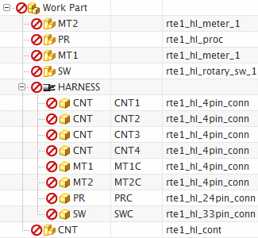
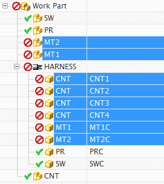

At the top of the navigator, click the Connector ID column headings to sort the connectors in the order shown below.

You can see from the connection list that the name of a component has been assigned to each of the Device IDs in the top assembly. Also notice that there is only one Controller, (CNT), but there are four 4–pin connectors in the harness subassembly (CNT1 thru CNT4) associated with that device.
Right-click any column heading and choose Select All. Do NOT click as this will resort the column.
Now you are ready to auto assign components. NX automatically assigns component names to unique components in the wiring harness subassembly.
Right-click any highlighted row and choose Auto Assign.

A total of five components are automatically assigned. In the device column, the controller (CNT), the processor (PR) and the rotary switch (SW) were auto assigned because they are unique components. The two meters MT1 and MT2 could not be automatically assigned because they are duplicate components in the assembly. The two connectors associated with the processor and rotary switch (PRC and SWC) were auto assigned, but the six 4-pin connectors associated with the controller and two meters could not be. You must manually assign the remaining components.